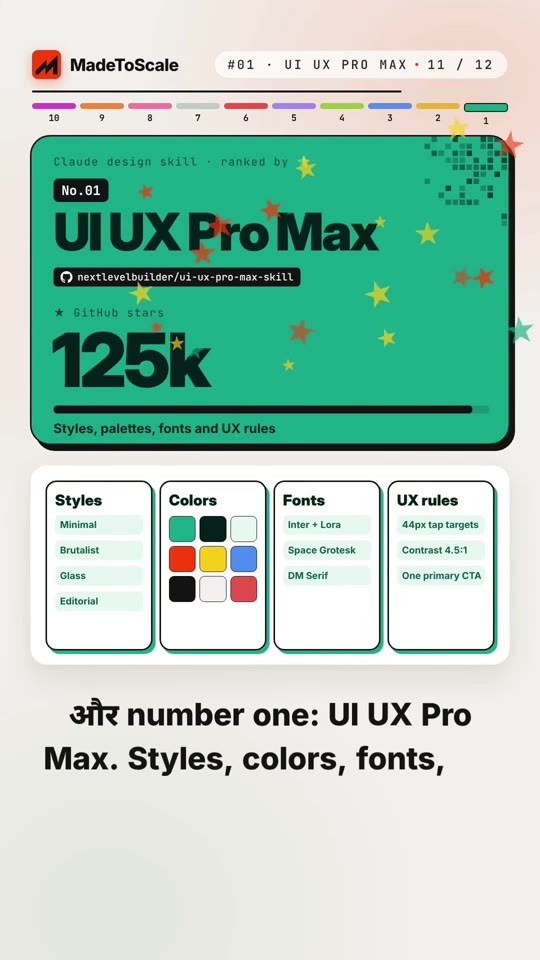
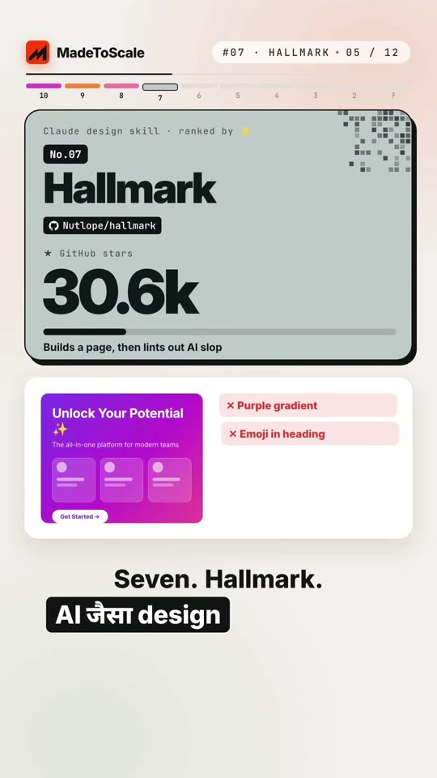
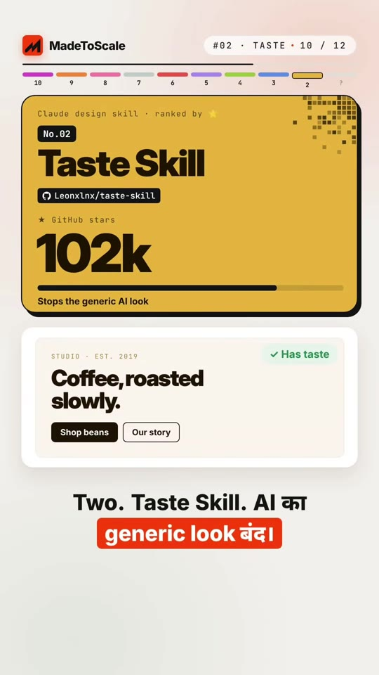

AI · Claude-Skills
Top 10 Claude Design Skills for Web and UI Design
Library / AI / Claude-Skills
A curated ranking of 10 Claude design skills (totaling 4.7 lakh GitHub stars combined) designed to eliminate generic AI styling ("purple slop") and generate production-ready UI, 3D landing pages, and system diagrams straight from prompts. The #1 ranked skill alone, UI UX Pro Max, accounts for 1.25 lakh stars.

Steps
- Install the all-in-one design foundation
UI UX Pro Max(125k stars) to enforce styles (Minimal, Brutalist, Glass, Editorial), curated font pairings (e.g. Inter + Lora, Space Grotesk), and UX constraints (44px tap targets, 4.5:1 contrast, single primary CTA). (00:43–00:48) - Lint out generic AI styling using
Taste SkillandHallmark; Hallmark specifically detects and strips purple gradients, emoji headings, repetitive 3-card layouts, and generic CTAs. (00:21–00:24, 00:39–00:41) - Convert wireframes to code using
Stitch Skills(Google Stitch designs straight to clean HTML/CSS) or clone existing sites usingWebsite Cloner($ clone reference-site.com). (00:13–00:16, 00:32–00:35) - Generate technical visuals directly from natural language using
Archify(plain English to architecture diagrams) andDiagram Design(41 diagram types styled in brand colors). (00:28–00:31, 00:36–00:38) - Build interactive presentations and immersive pages using
Frontend Slides(web-page-style presentations) andScroll World(3D brand scroll landing pages). (00:17–00:20, 00:25–00:27) - Audit layouts and accessibility with
Interface Skillsfor 8pt grid alignment, font sizing, and 7:1 contrast compliance. (00:09–00:12)


Verbatim
| When | Where | Text |
|---|---|---|
| 00:00–00:02 | screen | TOP 10 COMBINED · GITHUB · 4,70,000 stars |
| 00:06–00:08 | screen | No.01 · 1.25 लाख ⭐ |
| 00:09–00:12 | screen | #10 · INTERFACE · 02 / 12 No.10 · Interface Skills github.com/jakubkrehel/skills · 8.2k stars Layout, type and accessibility review ✓ Contrast 7:1 · ✓ Font 18px · ✓ Focus ring · ✓ 8pt grid |
| 00:13–00:16 | screen | #09 · STITCH · 03 / 12 No.09 · Stitch Skills github.com/google-labs-code/stitch-skills · 8.3k stars Google Stitch designs, straight to code |
| 00:17–00:20 | screen | #08 · SCROLL WORLD · 04 / 12 No.08 · Scroll World github.com/oso95/scroll-world · 9.7k stars Any brand, a 3D scroll landing page |
| 00:21–00:24 | screen | #07 · HALLMARK · 05 / 12 No.07 · Hallmark github.com/Nutlope/hallmark · 30.6k stars Builds a page, then lints out AI slop ✕ Purple gradient · ✕ Emoji in heading · ✕ Same 3 cards · ✕ Generic CTA Re-built without the slop ✓ |
| 00:25–00:27 | screen | #06 · SLIDES · 06 / 12 No.06 · Frontend Slides github.com/zarazhangrui/frontend-slides · 31.1k stars Slides that look like a web page |
| 00:28–00:31 | screen | #05 · DIAGRAMS · 07 / 12 No.05 · Diagram Design github.com/cathrynlavery/diagram-design · 31.7k stars 41 diagram types in your brand colours |
| 00:32–00:35 | screen | #04 · CLONER · 08 / 12 No.04 · Website Cloner github.com/JCoderxfore/ai-website-cloner-template · 36.2k stars Rebuild a reference layout in one command $ clone reference-site.com |
| 00:36–00:38 | screen | #03 · ARCHIFY · 09 / 12 No.03 · Archify github.com/tt-all/archify · 87.5k stars Plain English to architecture diagram "User request goes to API, queue, then DB" |
| 00:39–00:41 | screen | #02 · TASTE · 10 / 12 No.02 · Taste Skill github.com/Leonxlnx/taste-skill · 102k stars Stops the generic AI look |
| 00:43–00:48 | screen | #01 · UI UX PRO MAX · 11 / 12 No.01 · UI UX Pro Max github.com/nextlevelbuilder/ui-ux-pro-max-skill · 125k stars Styles, palettes, fonts and UX rules Styles: Minimal, Brutalist, Glass, Editorial Fonts: Inter + Lora, Space Grotesk, DM Serif UX rules: 44px tap targets, Contrast 4.5:1, One primary CTA |
| 00:49–00:52 | screen | FREE LIST · 12 / 12 FREE · ALL 10 + INSTALL COMMANDS DESIGN |
| — | caption | 4.7 lakh GitHub stars ⭐ Ye hain top 10 Claude design skills. Number 1 pe akele 1.25 lakh stars 👀 |
| — | caption | Us dost ko bhejo jo abhi bhi Claude se purple websites bana raha hai 💜 |
Tools & links
- UI UX Pro Max (#1) — Design systems, palettes, typography and UX rules — github.com/nextlevelbuilder/ui-ux-pro-max-skill
- Taste Skill (#2) — Eliminates generic AI look and prompts distinctive aesthetics — github.com/Leonxlnx/taste-skill
- Archify (#3) — Text-to-architecture diagram generator — github.com/tt-all/archify
- Website Cloner (#4) — Single-command layout cloner/rebuilder — github.com/JCoderxfore/ai-website-cloner-template
- Diagram Design (#5) — 41 branded diagram types for product & engineering — github.com/cathrynlavery/diagram-design
- Frontend Slides (#6) — Web-component and HTML slide builder — github.com/zarazhangrui/frontend-slides
- Hallmark (#7) — Lints out AI clichés (purple gradients, emoji headers, 3 cards) — github.com/Nutlope/hallmark
- Scroll World (#8) — 3D interactive scroll landing page generator — github.com/oso95/scroll-world
- Stitch Skills (#9) — Converts Google Stitch designs directly to clean frontend code — github.com/google-labs-code/stitch-skills
- Interface Skills (#10) — UI layout, typography, and accessibility auditor — github.com/jakubkrehel/skills
Try this
- Install
ui-ux-pro-max-skillandtaste-skillin your Claude Code / cursor environment to upgrade raw frontend output. - Use Hallmark's ruleset to audit your current landing page for AI clichés (purple accents, emoji bullet points, 3 identical card containers).
Open questions
The caption deliberately withheld the #1 skill (1. Video mein dekho 🔒) as an engagement hook to drive comments for the DM list. The video explicitly reveals it as UI UX Pro Max (nextlevelbuilder/ui-ux-pro-max-skill, 125k stars).